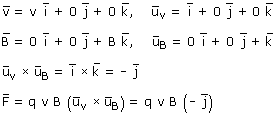
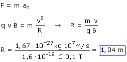
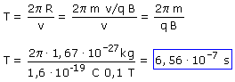

El protón se mueve en el plano de la pantalla y el campo magnético es perpendicular a ella y está dirigido hacia afuera
|
 |

El protón sufrirá una fuerza q·v·B (Módulo), perpendicular a la velocidad y al campo y su trayectoria será una circunferencia
Aplicando la Dinámica al protón:
|
|
 En la expresión del módulo de la fuerza la carga se pone sin signo |

Cinemática del movimiento circular uniforme:

Curiosamente el período de revolución no depende
de la velocidad
¿Que por qué? Pues muy fácil: si la velocidad es
alta el radio de la circunferencia será grande y el protón
la recorrerá muy deprisa y si la velocidad es baja el radio de
la circunferencia será pequeño y el protón la recorrerá
muy despacio. Se están compensando longitud de recorrido y velocidad